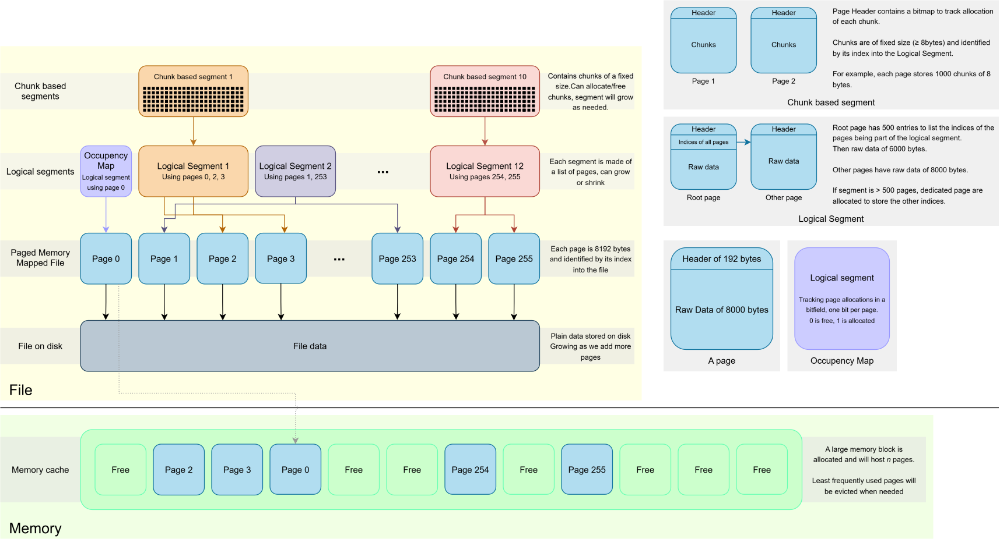

How core data is structured
The database content is stored on a single file, the engine opens it in exclusive mode and it the sole modifier.
The following schema depicts how data is stored and what are the core concepts/types to deal with.

(don't hesitate to click on the schema and zoom, it's a vectorial image)PagedMMF
The file content is split into 8KiB pages, which are loaded into the memory cache upon request and saved back to disk also upon request.
Note: MMF stands for Memory-mapped file, which is an OS concept but in this case we are not using that feature, but emulate its behavior to fit the "split by page" paradigm and also have control on when the data is written back to disk.
This is the lowest-level type, PagedMMF takes care of:
- The interaction with the file
- The how pages are loaded into and evicted from the memory cache
- How pages are requested, modified, and saved back to disk.
A Page
A single unit of data, when a page is requested and saved, its whole content is (loaded or saved).
A page is 8192 bytes (that is, 8KiB), which are split in two parts:
- The header, which is 192 bytes, all page types share the same base header (which is 20 bytes so far). The remaining space (172 bytes) are up to the implementation to store specific (meta)data. For instance the bitmap of a page storing chunks of a ChunkBasedSegment is stored in this part (at most 125 bytes are needed).
- The raw data, which is 8000 bytes, used at the discretion of its owner.
Check the data access page to learn more about how accessing the data.
ManagedPagedMMF
The ManagedPagedMMF type inherits from PagedMMF and add the followings:
- File header (Page
0) for identification purpose and storing metadata. - Allocation/free of pages, following this pattern
- Creation, resize, destruction of LogicalSegment.
LogicalSegment
The LogicalSegment type represents a segment of one (and most likely) multiple pages. Segment can be added/removed on a given instance, the type takes care of allocating/freeing them as requested.
Accessing its content is still Page based, the user can request access to the nth page from the range [0;n).
ChunkBasedSegment
The ChunkBasedSegment(CSB) type inherits from LogicalSegment and is used to allocate/free/access fixed-size (called stride) chunks of data of at least 8 bytes.
For instance, if a CSB is created with 4 pages and a stride of 16 bytes, the capacity will be: 8000 * 4 / 16 = 2000 entries. As a CSB inherits from LogicalSegment, more pages can be added after creation, growing the capacity.
The user can allocate x(from 1 to 64) consecutive chunks, the index of the first one will be returned, CSB also uses bitmap to track occupancy of its content.